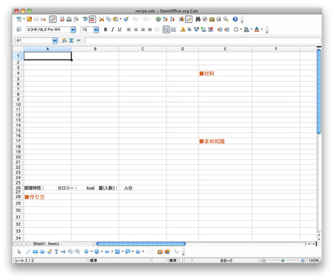
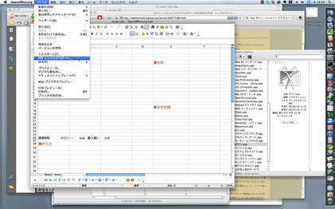
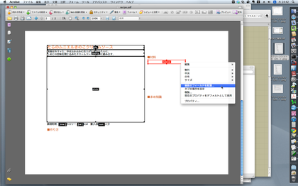
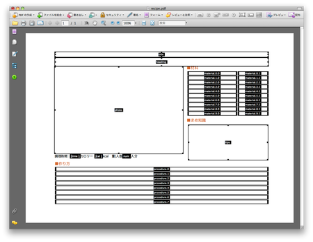

Tutorial / PDF帳票作成の流れ¶
写真付き料理レシピの帳票作成を例として，Field Reportsでの帳票作成の手順を説明します。
帳票設計¶
帳票レイアウトの作成¶
Microsoft Word, Excelなどのオフィスソフトを使って，PDFテンプレートの下絵となる文書を作成します。その文書を，Adobe Acrobatなどのツールを用いて，PDFファイルに変換します。
今回は，OfficeソフトとしてOpenOffice.orgのCalcを使用しました。 PDFファイルへの変換は，OpenOffice.orgの標準機能である「PDFとしてエクスポート...」により行ないました。

下絵の作成

PDFへの変換
フィールドの配置¶
次に，作成したPDFファイルをAdobe AcrobatなどのPDF編集が可能なアプリケーションで開き，フィールドを配置します。
下図は，Adobe Acrobatを使ってフィールドの配置を行っているところです。この時点で，各フィールドに適切なフィールド名とフォント・フォントサイズ・表示色などの表示属性を設定します。 図の例では，フィールドに仮の値を入力して，表示のバランスを確認しながら作業を進めています。 テーブル形式のフィールドを作成する際には，「復数のフィールドを配置...」を使用すると便利です。

フィールドの配置
すべてのフィールドの配置が終わったら，PDFファイルを保存します。 ここでは，PDFテンプレートのファイル名を‘recipe.pdf’としました。 これで，PDFテンプレートの作成は完了です。

完成したPDFテンプレート
プログラムの作成¶
レンダリング・パラメータをプログラム内に記述します。 レンダリング・パラメータは，帳票の構成を定義する部分(template要素)とフィールドに設定する値を指定する部分(context要素)に大きくわかれます。
template要素には，先ほど作成したPDFテンプレートのパス名を記述します。
context要素には，フィールドに設定する値を辞書オブジェクトとして構築します。通常この部分には，データベースなどから取得した値を設定すると思いますが，今回は固定値を設定しています。また，以下の例では日本語テキストをUnicode文字列としていますが，通常の文字列を使用する場合は文字コードをUTF-8としてください。
レンダリングを実行するには，第1引数にレンダリングパラメータを，第2引数に作成するPDF帳票のファイル名を与え，render()関数を呼び出します。
#!/usr/bin/env python
# coding: utf-8
import field.reports
param = {
"template": "./recipe.pdf",
"context": {
"title": {"value": u"たらのムニエルきのこクリームソース", "color": [204, 102, 51]},
"heading": u"表面はカリッと、中はふわふわに仕上げた淡白なたらに、\nしめじの旨味を閉じ込めたクリームソースが絶妙に絡みます。",
"photo": {"icon": "./recipe_photo.jpg"},
"time": u"15分",
"cal": 310,
"num": "2",
"material": [
[u"たら（切身）", u"2枚"],
[u"しめじ", u"1パック"],
[u"小麦粉（強力粉）", u"適量"],
[u"生クリーム", u"50cc"],
[u"卵黄", u"1個"],
[u"バター", "20g"],
[u"塩", u"適量"],
[u"白ワイン", u"大さじ2"],
[u"チャービル", u"適量"]
],
"procedure": [
u"(1)たらの表面に塩をふり、小麦粉(強力粉)をまぶし、バター50gを入れフライパンで、皮の方から焼く。",
u"(2)焼き上がったら皿に写し、フライパンの余分な油をとる。",
u"(3)残りのバター・白ワイン・しめじを炒め、生クリーム・卵黄を加え軽く火を通す。",
u"(4)(2)に(3)をかけ、チャービルを飾る。"
],
"tips": u"昔、風車を回して小麦粉を作っている人をフランス語で「ムニエ」と呼んでいました。小麦粉を使った料理「ムニエル」は、この「ムニエ」が由来しているそうです。"
}
}
field.reports.render(param, "menuiere.pdf")
ここでは，作成したプログラムを‘recipe.py’というファイル名で保存したものとします。 エンコーディングは，UTF-8とします。 画像ファイル‘meuniere_photo.jpg’も同じディレクトリに用意しておきます。 レンダリングを実行するには，‘recipe.pdf’と‘recipe.py’が存在するディレクトリで，以下のコマンドを実行します。生成されたPDF帳票は，‘meuniere.pdf’に保存されます。
$ python recipe.py